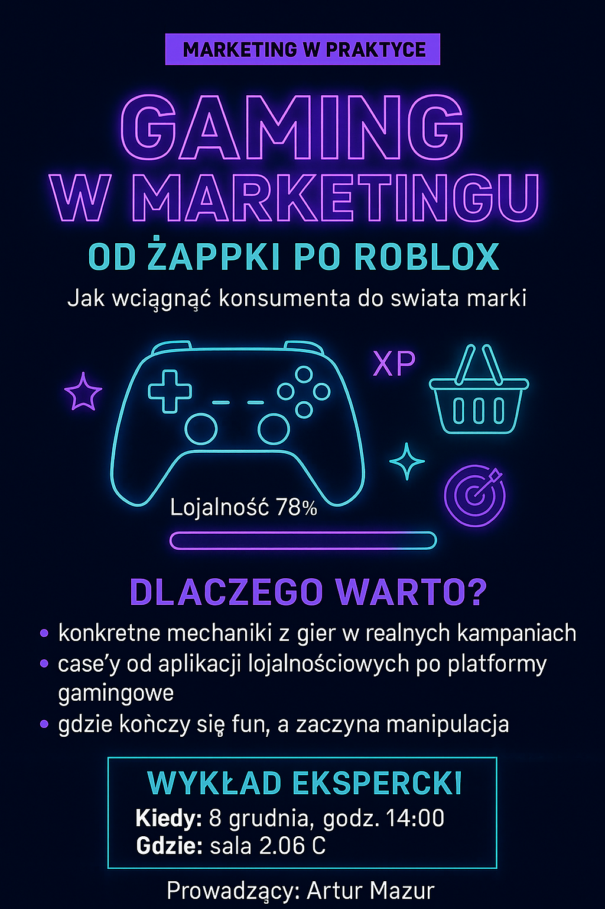

Seminarium: Gaming w Marketingu
Zapraszamy na wyjątkowy wykład ekspercki „Gaming w marketingu – od Żappki po Roblox”! Dowiedz się, jak marki wykorzystują mechanizmy gier, aby przyciągnąć i zaangażować konsumentów. Spotkanie poprowadzi Artur Mazur i odbędzie się 8 grudnia o godzinie 14:00 w sali 2.06 C.
Czego możesz się spodziewać?
- Praktycznych przykładów wykorzystania mechanik gamingowych.
- Analizy działań od aplikacji lojalnościowych po platformy gamingowe.
- Odpowiedzi na pytanie: gdzie kończy się fun, a zaczyna manipulacja?